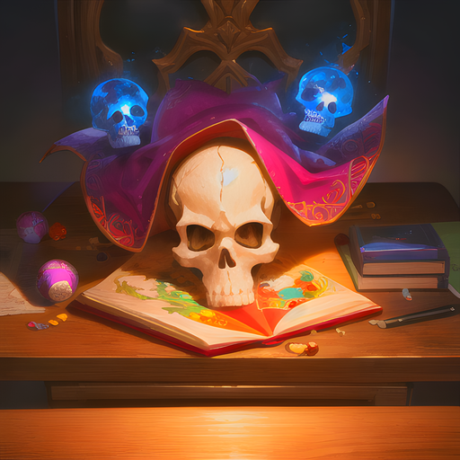
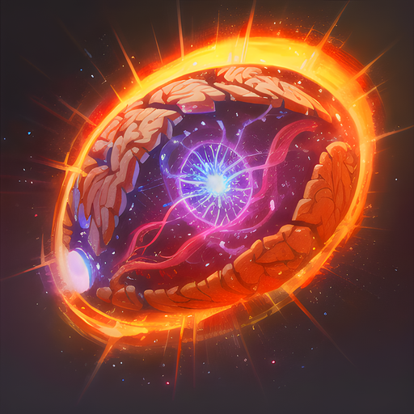

Les Professeurs
Les Professeurs

Dans l'univers d'Eternia, les Professeurs sont des érudits qui ont été formés depuis leur plus jeune âge dans les arts de la magie et de la connaissance, afin d'enseigner et de guider les futurs dirigeants du royaume. La plupart des Professeurs ont été éduqués dans des écoles prestigieuses, où ils ont appris à maîtriser les arts magiques et les sujets académiques les plus divers, du langage des runes à la philosophie politique. Les Professeurs d'Eternia sont des personnages intelligents et cultivés, capables d'enseigner à leurs élèves toutes sortes de compétences utiles, depuis la magie de guérison jusqu'à la stratégie militaire. Ils possèdent une grande connaissance du monde et des événements qui s'y déroulent, ainsi qu'une grande capacité d'analyse et de réflexion critique. Les Professeurs sont des personnes influentes et respectées dans la société, capables d'aider à résoudre les problèmes les plus complexes grâce à leur expertise. Ils sont des alliés précieux pour ceux qui cherchent à comprendre le monde qui les entoure et à trouver des solutions créatives aux défis auxquels ils sont confrontés.
Spécificité de la classe : 5% de précision supplémentaire
L'attaque de savoir encyclopédique est une technique unique utilisée par les professeurs, souvent des érudits bien informés, qui maîtrisent des domaines de connaissances spécifiques. Elle tire ses origines de l'art de l'enseignement, où les professeurs partagent leur savoir et leur expérience avec leurs élèves.
Lorsque le professeur utilise cette attaque, il déverse une vague de connaissances encyclopédiques sur l'ennemi, le submergeant sous une montagne d'informations complexes. Le flot de faits et de théories inonde l'ennemi, l'assommant et réduisant sa défense face à l'attaque imminente du professeur.
Le professeur peut utiliser différentes méthodes pour délivrer cette attaque. Il peut utiliser sa voix pour réciter des faits et des théories, ou utiliser des objets tels que des livres, des parchemins ou des tablettes pour visualiser les informations qu'il partage. Dans tous les cas, l'effet est le même: l'ennemi est submergé sous une vague de connaissances qui l'empêche de se défendre efficacement.
Les professeurs qui maîtrisent cette attaque peuvent devenir des experts en tactique et en stratégie, en utilisant leur savoir pour vaincre leurs ennemis sans même avoir à brandir une arme. Cependant, cette attaque nécessite une grande quantité de connaissances encyclopédiques et de maîtrise de domaines spécifiques, ce qui en fait une technique rare et difficile à utiliser.
Puissance : 40 | Recharge : 2 tours | Effet : -25% défense ennemie (2 tours)
L'attaque d'encouragement est une technique qui tire ses origines de l'expérience et de la sagesse du professeur. Ce dernier, grâce à ses connaissances et sa capacité à comprendre les forces et les faiblesses de ses alliés, peut encourager et soutenir ses coéquipiers pour qu'ils donnent le meilleur d'eux-mêmes.
Lorsqu'il utilise cette attaque, le professeur utilise sa voix calme et rassurante pour apaiser les blessures de ses coéquipiers et leur donner la force de continuer à combattre. Les coéquipiers qui reçoivent cet encouragement sont soignés de 30 points de vie, tandis que leur force et leur défense sont augmentées de 25 % pendant trois tours.
Le professeur est également encouragé(e) par sa propre sagesse et son expérience, ce qui lui permet de puiser dans ses propres forces pour vaincre ses ennemis. Cette technique est souvent utilisée pour redonner de l'énergie et de la motivation à l'équipe lorsqu'elle est sur le point d'abandonner ou de perdre un combat important.
Cependant, il est important de noter que cette attaque nécessite une grande concentration et une grande expérience de la part du professeur. Il doit être en mesure de comprendre les besoins et les forces de chaque coéquipier pour leur donner l'encouragement dont ils ont besoin pour continuer à se battre.
Effets : soin de 30 PV, +25% force et défense (3 tours) | Recharge : 3 tours

L'attaque de la conférence ennuyeuse est une technique que le professeur utilise pour submerger l'ennemi sous un flot interminable de paroles. En effet, il/elle a souvent l'habitude de donner des discours longs et ennuyeux, une compétence qui s'avère très utile au combat.
Le professeur commence en lançant une conférence ennuyeuse, utilisant sa voix monocorde et soporifique pour endormir l'ennemi. Les paroles du professeur sont lentes et interminables, formant un flux régulier de bruit qui fait sombrer l'ennemi dans un état d'ennui profond.
Pendant ce temps, l'ennemi commence à se sentir somnolent, se couvrant les oreilles pour tenter de bloquer le son. Cependant, les mots du professeur continuent de pénétrer dans ses oreilles, causant des dégâts psychologiques et physiques. Les attaques verbales ont des effets réels, affaiblissant la défense de l'ennemi et lui infligeant des dégâts.
De plus, l'ennemi commence à se déplacer plus lentement, car l'ennui lui enlève toute envie d'agir. Cette faiblesse est exacerbée par le fait que le professeur s'est souvent préparé(e) pour cette attaque, choisissant des sujets particulièrement ennuyeux et lents pour assommer son ennemi.
En fin de compte, cette attaque est un outil très efficace pour le professeur, lui permettant de vaincre des ennemis plus forts ou plus rapides que lui/elle. L'utilisation de sa connaissance encyclopédique combinée à son talent pour les discours ennuyeux peut faire de lui/elle un combattant redoutable, capable de vaincre n'importe quel adversaire.
Puissance : 30 | Recharge : 3 tours | Effet : -50% vitesse ennemie (3 tours)

Le professeur se concentre intensément, fixant son esprit sur sa cible. Il sent l'énergie psychique affluer à travers lui, renforçant ses sens et sa perception. Il visualise l'attaque à venir, analysant les faiblesses de l'ennemi et planifiant son assaut avec une précision chirurgicale.
Pendant ce temps, l'ennemi se prépare à l'impact imminent. Mais il ne peut pas prévoir la fureur et la précision de l'attaque mentale qui arrive.
Le professeur déchaîne alors une attaque d'une puissance mentale incroyable. Son esprit se concentre en un faisceau de force psychique, qui frappe l'ennemi avec une précision chirurgicale.
L'attaque laisse l'ennemi secoué, son esprit désorienté et vulnérable. Le professeur peut maintenant enchaîner avec une série d'attaques rapides et précises, dévastant l'ennemi avec une efficacité mortelle.
Cette attaque est le fruit d'une intense concentration mentale et d'une capacité à utiliser les pouvoirs psychiques pour améliorer les compétences de combat du professeur. Elle permet au professeur de vaincre des ennemis beaucoup plus puissants et résistants, en leur infligeant des dégâts considérables et en leur laissant peu de chances de riposter.
Effets : +50% precision (2 tours), esquive de la prochaine attaque | Recharge : 4 tours
Le Contrôle surprise est une technique avancée de manipulation mentale utilisée par le professeur pour désarmer l'ennemi et lui infliger des dégâts massifs. Cette attaque est basée sur la capacité du professeur à influencer l'esprit de son adversaire, en utilisant sa voix douce et envoûtante pour l'hypnotiser.
Le professeur commence par parler à voix basse, en utilisant un ton apaisant et monotone pour distraire et endormir l'esprit de son ennemi. Cette technique est souvent associée à des techniques de méditation, de respiration et de relaxation, qui permettent au professeur de se connecter avec l'esprit de son adversaire.
Pendant que l'ennemi est sous son influence, le professeur utilise sa propre force mentale pour affaiblir la force de l'adversaire, réduisant sa force et sa volonté de combattre. Cette technique est souvent comparée à un effet de confusion, dans lequel l'ennemi est désorienté et incapable de se défendre contre l'attaque imminente du professeur.
Enfin, le professeur profite de l'état de confusion de l'ennemi pour l'attaquer, lui infligeant des dégâts massifs et le vaincre sans effort. Cette technique est souvent utilisée par les professeurs qui cherchent à éviter un combat prolongé et à mettre fin rapidement à un conflit.
Cependant, cette technique est très avancée et nécessite une grande maîtrise de la manipulation mentale et de la psychologie. Les professeurs qui maîtrisent cette attaque peuvent devenir des experts en combat mental, capables de vaincre leurs ennemis avec une facilité déconcertante. Mais cela nécessite de la patience, de la pratique et de la connaissance approfondie de la psychologie humaine.
Puissance : 80 | Recharge : 5 tours | Effet : -50% force ennemie (4 tours)